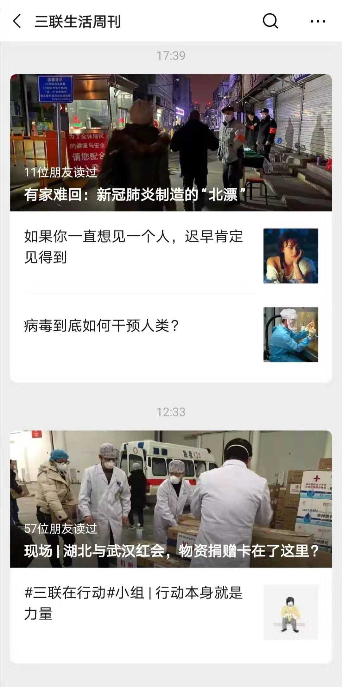
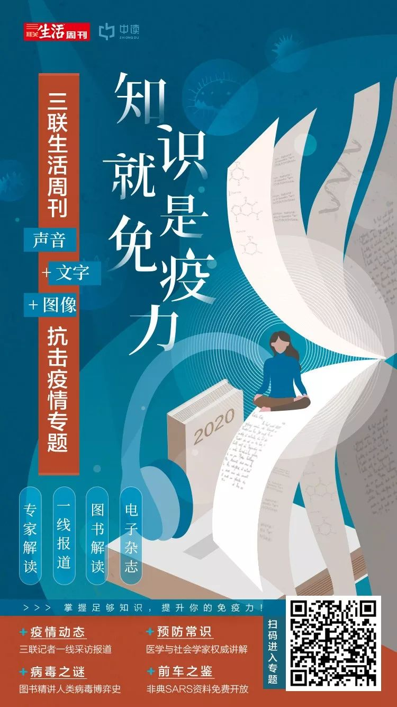

小游戏，过了个好年
原文链接 备份链接 《创新经济战疫计划》，是燃财经在新型肺炎疫情期间推出的特别栏目，关注创新经济企业遇到的新难题、商讨应该采取的新对策，希望能够帮助中小企业一起战胜挑战、把握机会。 作者 | 赵磊 编辑 | 周昶帆 三个微信群，上千条语 …
微信ID:sanlianshutong
『生活需要读书和新知』
《三联生活周刊》自1月20日通过微信公号发布第一条警示性报道——《“非典”幸存者礼露口述》开始，至2月26日为新冠疫情整体报道文章超过100篇。其中，《三联生活周刊》微信号推送记者原创调查稿60篇；《三联生活周刊》杂志连续出版了三本疫情刊物，刊发记者原创报道50余篇。
在武汉确诊患者突增后，三联第一批记者在1月21日即赶赴武汉疫情现场，第二天即发布报道《现场 | 武汉新型肺炎：为何直到今天才引起更大注意？》。此篇报道阅读量突破1400万，并成为卫生医疗机构早期了解情况，作出决策的必读文本。读者评价说，三联以真实、及时的报道，化解恐慌和戾气，让人们看到了公共媒体在关键时刻的价值。
整个春节期间，报道团队始终坚持在一线工作，广泛采访一线医护人员、病患、医疗专家、以及受疫情冲击的特殊群体。《三联生活周刊》在报道中恪守职业道德与新闻伦理，做到内容真实、及时、有效、完整，尊重生命尊严，保护弱势群体，忠实履行了公共媒体的职责。
以下文字为《三联生活周刊》副主编吴琪对这次疫情报道行动的整体回顾与思考。

《三联生活周刊》记者在武汉
作者丨黑羊 来源丨记者站
（ID:jizhezhan）
武汉人吴琪，1月17日坐高铁从北京回汉口过春节。她是《三联生活周刊》（下称三联）的副主编。
今年是吴琪父母70岁生日。在武汉，她一家三口将参加一场三十人的亲戚聚会——最终在吴琪强烈反对下，聚会被取消了。
这场聚会本来定在1月21日。但这天下午，吴琪已经和另外两位从外地赶来的三联记者王珊、张从志，住进了武汉金银潭旁的一家酒店，并开始了解疫情情况。在那时，病毒“人传人”的说法尚未证实，几乎还没有记者进入过华南海鲜市场，有关疫情的一切需要拨云见日。
在武汉时，吴琪给主编李鸿谷打电话，预判肺炎疫情“绝非小事”，要求派记者来现场，并很快组织起经验谈丰富的硬新闻报道力量。
从那时开始，三联的内容团队就进入了“战时状态”——先后有6名记者抵达武汉现场，和后方记者一起，生产出一本152页的特刊《武汉现场》、一期封面文章《武汉会战》、微信保留报道84篇，总报道量已经超过100篇。
这6名记者目前还在武汉，虽然身体状况尚好，但武汉何时解封，他们如何离开还都是未知。
李鸿谷曾提醒吴琪，“参与疫情报道的记者越来越多，这个时候最好抽空做一个记录，哪怕每天几百字，把你为什么想着让记者做这样的报道？为什么会这样定选题方向？稍微记一下，怕到时候会忘。”
等吴琪开始在自己公众号上记录武汉肺炎日记的时候，已经是1月31日。第一篇文章的标题很重：“记者今日所记录的，即为他日之历史（新冠肺炎1.20-23日 上）”
第一段写到：过去的十天，是打仗一般的日子。多数人都没有料到，中国将度过一个如此特殊的春节。对我而言，从1月21日发起并参与《三联生活周刊》对新冠肺炎的报道，我迅速经历了从回家度假到进入“战斗”状态的过程。哪怕才过十天，回想起从1月21日开始的经历，都有一种不真实感。
2003年，吴琪来到《三联生活周刊》，作为记者参与报道当年的“非典”疫情；17年后，当武汉新冠状病毒疫情肆虐全国时，吴琪已经成为这本杂志的内容统筹者之一。

吴琪个人公众号“叙事的一万种可能”截图
她的个人微信公众号叫“叙事的一万种可能”。在2月9日的一篇文章末尾，她写出一连串问句：
让我感到更深一层无奈的是，我们看到的，不是人人都拥有手机吗？不是人人都在忙碌地发微博、发微信吗？为什么在1月23日武汉骤然封城前，医院的世界与公众的世界，楚河汉界呢？医疗专业群体，在我们的社会里，就如此没有话语权吗？我们是生活在2020年的信息社会吗？真相难道可以被XX在每一部手机、每一张嘴后边？那我们每天都在忙着表达什么呢？
以下是“记者站”对吴琪的专访，讲述《三联生活周刊》记者对武汉新冠状病毒疫情报道背后的点滴。

视角
记者站：《武汉现场》这本特刊的开篇文章，很多细节您个人公众号也记录过。当时为什么会选择这样一篇带有记者个人视角的文章来作为开篇？
吴琪：当时就有一个想法，杂志内容其实是需要一个主文的，对我们来说，因为整个事件的进展是每天都在变化的。要一篇文章能把这些不同的日期的变化给记录下来。
这篇文章该怎么写由谁写，本来我们想过以一种类似于上帝视角，就说全知全能，比如说武汉可能在重要的时间点都发生了什么事情，记者退到后面，把所有的信息组合起来，让大家知道这个事情是怎么发生的。
但是我们后来发现，我们获得的信息量不足以做到这一点。因为现在疫源地到底是哪里？是不是华南海鲜？到现在都不能确定，到底是12月才有首个病人，还是说很可能在这之前就在发生。
我们后来也问了一些公共卫生专家，他们说其实在目前来说，是做不到真的能追到0号病人的，因为很有可能有些人已经早于他就感染了，但实际上没当成这个病（新冠病毒肺炎），或者他就治好了，或者他因为别的原因而死亡了，并没有把他和新冠病毒联系起来。
所以我们发现没法做一个全知全能式的报道来讲述。这个时候，就是把记者的个人体验带进去，需要一种个人叙述。
因为我写这篇文章其实是有不同的层面和身份在里面，第一是纯粹个人在武汉那几天的经历；第二层是我作为记者、一个职业人，对这个事情有一个职业视角来写作；第三层是作为杂志内容的负责人，可能是指导一个团队在打仗，所以就不仅是我个人视野的问题。
所以整个报道，可能第一篇文章我参与了写作、报道。但是很快主编就提醒我，我不应该再去做个人的采访和写作，因为现在疫情那么严重，形成一系列的报道，我就要抽身而出，成为指挥。作为指挥来说，就不要为某一个稿子付出过多的精力，而是把整个编辑部给调动起来，所以当时我们就从这个角度来考虑，这个特刊就选了一个有个人视角的文章来当主文。
记者站：2003年您去三联，当时就遇上了“非典”，那时您是记者，现在是一本刊物的内容统筹者，2003年到现在，就重大公共事件的报道来说，有什么变化？
吴琪：很多早年做调查报道、社会新闻的记者，还在做的现在是比较少了，不过三联在（硬新闻）这一部分的记者没有流失太多。
有些反馈也说，三联以前（的文章）不是这样的，为什么这一次疫情的报道突然变成硬新闻。但是实际上，在三联的社会新闻这部分，我觉得是变化不大的。不管是我们操作的方法、价值观、还有节奏。
再一个，三联这些人的价值观，就是一直很纯粹的想做一些有公共社会意义的新闻，他们的价值观没变。
还有一个，跟我们现在节奏也有关。因为有一些朋友会说你们是传统媒体，但你们为什么以一种新媒体的节奏在做事情？其实这个节奏对我们来说就是个常态，因为我们每周是150多页杂的一个原创性的新闻刊物。本来我们写稿记者就30多位，再加上我们的微信是每天三更，稿量就很大。其实我们在微信上，凡是做社会热点的调查新闻，点击量都是特别大，只要我们有这样的新闻，就是会让记者花力气去做。
所以我们在这次疫情报道的节奏和效率，就是我们平时做事情的一个节奏和效率。
但是这次不一样的在于，第一春节放假了，我们的纸刊是提前做好了，记者不用面对150页的纸刊压力，这个时候把人调集起来，精力是集中在这一件事情上，再加上有的媒体会休息而我们不休息，就以一种不休息的态度来做（这个新闻），就能连续的提供报道。

《三联生活周刊》微信公众号的连续报道
判断
记者站：刚发生疫情的时候，有没有意识到这个事件将会是一个特别长期的话题？
吴琪：我们实际上了解完（病情）之后，就意识到这是个长期的事情。因为我们做报道的时候，所有的判断都会是我们非常确信的判断。
因为第一篇稿子是说新冠状病毒肺炎为什么直到今天才引起更大注意，这是我们1月22号的一篇微信，然后23号我们又发了一篇文章，就是一线医生口述在说疫情大爆发或将来临。
这篇文章的反响也很大，作为一个媒体在这个时候敢下这个判断，背后是需要对医生的口述有相当强的一个信任，以及对他表述的事实，这个事实基础是不是牢靠；另外他的判断到底能不能经得起时间检验，实际上这背后还是要相当坚定才敢发这篇文章的。

第一篇稿子
如果事情不像他说的那样，没有任何大爆发，或者这不是一个长期战争，那作为媒体我们是失信的。所以看起来只是医生一个人在说，但是背后，我们其实是通过不同的信息源都预判了这个事情会这样，这样我们才敢这么下判断，这个判断还是比较早的。
记者站：初期在武汉，只有您、王珊和张从志三个人，报道是合作还是单兵作战？
吴琪：对，因为我们平时做稿子，对记者的锻炼就是一个人能做的事，就不要两个人去做。我们的文章是极少有合作的。这可能也是我们跟别的媒体的不一样，包括我们特刊，你看署名，基本上是每人一篇。
我们不把记者当做一个新闻选题里只提供一部分内容的单独生产者。我们对记者的要求是，从你对选题有兴趣到你采访、完成一个完整的稿子，（这个过程）记者自己要负所有责任，自己要有能力进行全链条的生产。
我们当时是三个人合作第一篇稿子，对我们来说是极为少见的。而背后得到的信息量是远远多过于这个稿子的量的，但是因为我们清楚微信的写作和杂志写作不一样。
微信的写作就是你每篇文章的主旨和信息点是要比较集中的。也就是说你这篇文章到底要传递什么信息，以及你的材料是不是围绕你要传递的主题，它会比杂志来说更集中，传达的信息更明确。
我们一旦意识到，这是一个要投入很多篇内容生产的选题时，每一篇的主打方向必须明确，最后是一个组合拳，这就不用一篇文章把所有内容说尽。
所以我们当时也非常清楚，一篇篇文章下来，除了开篇偏综合外，后面就是写比如医生怎么说？比如肺炎患者为何一床难求？比如口罩为什么会那么缺？到底是怎么回事？包括湖北周边省市断路，我们做了一个3亿只鸡断粮。
每一篇文章主旨都很明确。这就是我们抓住微信传播的特点，和我们纸刊上文章的特点还是有区别的。
分工
记者站：当时6名记者到齐之后，后方有多少记者在为这6名记者提供支援，或者说分工是怎样的？
吴琪：因为我们每个人都要独立为稿子负责，所以后方记者和前方记者没有服务关系。你要写什么？要单独出稿。
对前线记者的要求是，你能做哪些不去现场的人做不了的稿子？如果你的关注点是后方记者打电话也能采访到的，那就没有必要你来做。
比如说我们的前线记者去方舱医院，详细的讲了怎么穿防护服、一道道的门怎么进入、在现场看到什么？还有记者写百步亭小区的故事，现场一直跟着病人，才会发掘到故事，然后她又看到了病人家属以及不同人的样子，最后的描述，是后方记者通过电话采访不到的。
除了这些必须由前方记者来采的，后方记者可能写的是“小汤山模式是不是这个事情的唯一的解决办法”，还有后方记者会写综合性的稿子，可能他需要打电话采访，因为我们对记者的要求，就是一名训练好的记者，他其实通过打电话能得到的信息是相当丰富的。
因为几乎所有场景描述，都是可以通过语言交流获得，只是记者的意识到达没有。

记者站：在疫情报道中，从一个撰稿人到统筹者，这其中的变化是怎样的？
吴琪：指挥打仗的作用还是比较重要。一是每天的信息铺天盖地，我们微信每天要推出大概3到4篇报道，这些报道到底做什么？
其实从读者的角度来说，大家的这种心理热点一直在变，比如说物资最缺的时候，如果你讲不清楚为什么物资短缺，或者说大家不是有一段时间对湖北和武汉红会的承担作用诟病很多，如果你没有一个应对的报道，等大家注意力转移了，你再写，我就觉得媒体发挥的作用就不够了。
所以每天怎么能踩到大家的心理热点，又能提供足够的事实，这个感知能力其实很重要。
我自己有各种方法。第一就是我们的微博和读者互动比较多，因为我们疫情报道前面几篇引起很大的关注之后，就会有很多读者跟我们反映问题，所以微博就是一个信息的来源地。然后我们记者，不管是前线还是后方的，他们会不断的给我反馈信息。
而我自己是武汉人，也是武大新闻系毕业的，我的同学有很多也是媒体人，所以也会不断的跟我反映问题。当时如果得到一个信息是值得做的，我们就赶紧做微信报道。如果是不足够大，我们就放到微博上。
这些朋友很乐于把自己当时看到的情况，或者觉得应该反映的问题告诉我，所以我们就会不断的感知，每天受众的需求是什么？他们的心理热点是什么？这些信息汇聚到一起形成选题，我们的记者就跟进。
记者平时的训练都是突发的事件来了，我早上问你晚上9点稿子能不能交过来？我们社会部的记者绝大多数是可以做到这一点的。
也有可能就是我今天早上9点跟你说了，明天中午11点左右你这个稿子交给我，这是一个正常的交稿的时间，他们基本上就会说没问题。
记者站：有没有记者交不了稿子的情况？
吴琪：我们有一个读者评论，说他订了很多年的三联，这些文章是这本杂志一贯水准的体现。
我是觉得这话大体上是对的，无非就是说以前做一本杂志是杂为主，所以大家可能看到的是，一本杂志里有30多篇文章。现在当这些人把力气都用在一件事情上的时候，其实大家看到的是你整个编辑部为一件事情连续发力。
平时我们培养记者就是这样，如果你是一篇杂志稿，我们可能是4到5天的采访时间，这4到5天是包括了出差和采访和写作。
如果是个微信稿，因为微信相对来说不求全，就是你在一个点上有明确的信息量把它说清楚，微信稿得篇幅大概两三千字，他其实比杂志稿要短，所以其实他需要记者花费的时间和精力比杂志稿是要少的。
但微信的时间点非常重要，你同样一个事情，今天发稿和明天发稿带来的反响是不一样的。所以我们90%的记者都能完成按时交稿这一点。
而且在微信中我们还是有合作的，如果回翻微信上我们这一系列的报道，有些文章是两个人署名的，这在平时是很少见的。但是疫情中因为有的事情太急了，就两个人去做。
比如我们关注到“武汉周边地区的疫情情况”这个信息时已经是下午了，这个时候如果我让记者明天下午就要交稿，我也觉得他们采访时间不够，就会让两个记者来做这一个稿子。两个记者的话，这稿子就一定得交了，就没什么余地。

差异
记者站：同一时期内，许多媒体都出了封面文章、特刊，大家都在这一个场景里，三联怎么去打内容差异化？
吴琪：首先三联的记者的那种个人叙述方式，或者我们杂志倡导的叙述方式，可能就跟其他的媒体还是有区别。
因为我们不以通讯社的方式来做新闻的。通讯社的方式硬材料多，把不同的材料联系连接起来传递的时候，这种连接方式会稍显生硬。我们强调传递的信息时候，要以一种很强的叙述能力来表达出信息背后的故事，它的传播力才能强。
我们还很关注疫情事件中的个体命运。有些媒体会有一种价值观，认为在大事件中普通的个体命运是不足够有讲述的，价值不大。但是我一直都强调，时代背景下，普通人的个体命运它本身是特别值得关注的。所以我们对命运的这种讲述，可能也是很重要的一个点。
另外我们的话题把握能力和延展能力是有的。比如这本特刊其实是分为两个部分，第一个部分就是现场，我们去的这6名记者，他们的文章都体现了现场感。
后半本其实更多是偏话题，比如说城市的公共卫生管理，比如小汤山模式本身带给我们的警示是什么？疫情对经济有可能的影响是什么？这些话题是根据我们不同主笔的特色去采写。比如说经济的主笔，他就从经济角度来讲疫情的影响；科学报道的记者，他就会从这个病毒到底是什么这个角度来讲。
记者站：到现在为止，给您印象最深刻的报道或采访是哪一个？
吴琪：我觉得我作为读者和作为发稿者，判断是很不一样的。我作为读者，我可能容易被个体故事打动。
但是作为杂志的发稿者，你知道只有个人命运的文章是不够的。比如说我们记者王珊和张从志，其实后来他们主要偏重于医生、医院角度的故事，因为这是一个公共卫生的疫情，所以医院怎么面对这次疫情？后来全国医护2万多人增援武汉，对接的过程中，整个救治思路是什么？动用哪些资源？怎么动用资源？对这么一个传染病，你在紧急救治的时候到底发生什么事？这些文章都特别有力量。
因为这些非常核心的材料，来自核心的场所以及核心人群。所以作为一个发稿者，肯定需要有很强的记者来出文章。同时我们也有其他的记者写患者的故事，写社区的故事，这样配合在一起，那才是有力量的。

方法
记者站：您有过一个演讲，叫三联为什么做硬新闻，而在这次疫情当中，好像硬新闻又受到很大重视，所以现在调查报道或者社会新闻报道是不是又回到前台了？
吴琪：我觉得不会太长久，这跟整个社会的变化有关。比如经济水平的变化、人们面对城市问题的变化，所以不是我们决定什么样的新闻走上前台，总的来说还是读者的需求在决定。
这么重大的公共卫生新闻，他必定会使硬新闻在这个时候唱主角，这个时候媒体要做的，就是你能担得起责任和唱得了这出戏。但是当这个事情过去之后，你不能要求所有人还得把这种硬报道，当作一个人必须每天要优先选择的一个阅读内容。
硬新闻只是新闻报道的一个品类，三联其实是在把硬新闻的操作方式用到了所有的报道的操作上。我们去年做咖啡刊就是，主笔杨璐采写咖啡的封面，这一篇文章他可能采访了20个人，其实就是用做硬新闻的方式，用到了别的选题里。
相对自媒体来说，三联的优势在于有一个很强的团队，擅长于不同类型报道的人是比较齐全的。所以我们希望让尽量多的、不同部门的记者都掌握这套（做硬新闻）方法，你可能是做科技报道的，或者做文化报道的，但你也应该具备社会报道调查的这一套方法。

 识别上方二维码，免费领取三联“疫情专题”全部内容****
识别上方二维码，免费领取三联“疫情专题”全部内容****
专题回顾：
━━━━━
▲ 点击图片阅读 三联书店历年好书回顾

▲ 点击图片阅读 三联书情2019年度文章精选
━━━━━

微信扫一扫 购买三联图书kindle版

微信扫一扫 在线阅读三联电子书
微信扫一扫 购买三联图书
—END—
欢迎点“在看”，分享转发到朋友圈
-—
生活需要读书和新知
-—

ID:sanlianshutong
▲长按二维码即可订阅
*****-—*****
▲回复好文，阅读更多专题文章
▲回复听课，了解书店里的大学公开课
*************▼*点击下方阅读原文，*********购买三联图书*************************
原文链接 备份链接 《创新经济战疫计划》，是燃财经在新型肺炎疫情期间推出的特别栏目，关注创新经济企业遇到的新难题、商讨应该采取的新对策，希望能够帮助中小企业一起战胜挑战、把握机会。 作者 | 赵磊 编辑 | 周昶帆 三个微信群，上千条语 …
原文链接 备份链接 过去的十天，是打仗一般的日子。多数人都没有料到，中国将度过一个如此特殊的春节。对我而言，从1月21日发起并参与《三联生活周刊》对新冠肺炎的报道，我迅速经历了从回家度假到进入“战斗”状态的过程。哪怕才过十天，回想起从1 …
原文链接 备份链接 非常时期，武汉成了全国人民挂念、祈福的城市。封城后，武汉人民的真实生活是什么样？ 正和岛自1月26日起特别推出《叶青：我在武汉疫区的第N天》专栏。叶青是一位定居武汉40年的市民，也是一名学者和官员。接下来的一段时间，他 …
原文链接 备份链接 3月23日。 封城第61天。我从初一（元月25日）开始在微博作记录，比封城晚了两天。所以，这是第59篇。 今日大晴。很舒服的天气。下午终于把狗送到了宠物医院。它的皮肤病再次发作，全身溃烂，不治疗也是不行了。我自己手指也 …
原文链接 备份链接 3月22日。 封城第60日。难以想象的日子。 昨晚的雨下得还不小，但今天，天色又明亮了起来。无疫情小区逐渐内部开放，今天听到窗外有小孩的笑声，真是久违的声音。外出小区也被允许，只是需要控制时间。去超市购物，也建议错峰。 …